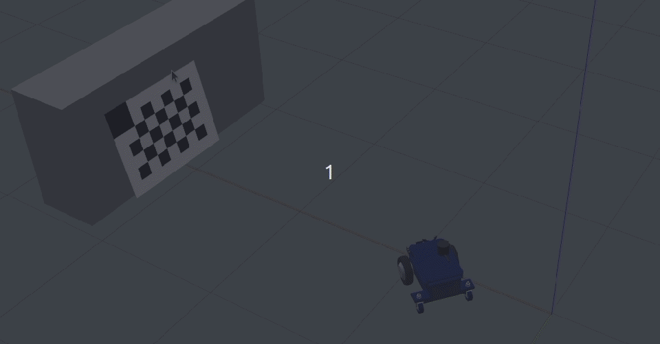

Motion Camera Calibration
Motion Camera Calibration is a camera calibration software provided by ifm based on an ifm specific checkerboard that estimates the rotational parameters of the camera head with respect to the user coordinate system.
This application is available free of charge and included in the embedded O3R firmware (version >= 1.1.30) and the GUI ifm Vision Assistant (version >= 2.7.6). To use this application, users must install the ifmVisionAssistant tool, which can be downloaded here. To get started with the ifmVisionAssistant, please refer to this documentation.
Pre-requisites
Before starting the MCC tool, the user has to print the checkerboard provided by ifm either directly on a thick aluminum sheet or on matte finish paper and paste it on a flat board without any air gaps. The checkerboard has to be printed at 100% scale. The resulting total print size is 600 mm by 800 mm. The smaller squares are 100 mm X 100 mm.
Parameter Overview
Parameter |
Description |
|---|---|
|
The port that is used for calibration |
|
The current app state |
|
The list of commands to trigger the calibration software |
|
The driving direction of the robot during the acquisition of motion images |
|
Index of a static image |
|
Translation parameters of camera with respect to user coordinate system |
|
To set illumination mode of the camera head |
|
size of checkerboard cell in meters |
Procedure
Place the target horizontally (when the camera head is mounted in landscape orientation) or vertically (when the camera is mounted in portrait orientation) so that the reference corner (the larger cell) is at the top.
Configure the cell size of the checkerboard target in
configuration/target/cellSizebased on the printed checkerboard. If the checkerboard is printed at 100% scale then the cell size would be equal to 0.1m (default).Input the camera translations in
configuration/extrinsicHeadToUserSelect the illumination mode based on your ambient light in
configuration/port/modeDefault:
ambientLightIlluminationWhen there is not enough ambient light, change mode to
activeIlluminationNote: Ambient light and LED have different characteristics, especially when it comes to the near-infrared (NIR) spectrum. The sunlight includes a significant portion of NIR light, which is electromagnetic radiation with wavelengths ranging from 780 nm to 3.0 μm but on the other hand, the modern-day lighting and especially the LED lighting provides very little or no near-infrared radiation.
Select the driving direction of your robot. Select
+x : Moving towards the checkerboard
-x: Moving away from the checkerboard
+y: Moving from right to left of checkerboard (for the side mounted cameras)
-y: Moving from left to right of checkerboard (for the side mounted cameras)
Change the application state to
RUNOnce the application is changed to
RUNstate the live image appears on the right side window.Move the camera (robot) closer to the target such that the target is large in the live image: it should at least fill 50% of the image.
Once the checkerboard is detected, the corners will become green indicating that you can start the backward motion.
Trigger
startMotioncommand and move the robot backward in a straight line.
Once you click
startMotion, the internal algorithm starts to grab images. Don’t worry about the commands! The command will automatically return tonop.The minimum movement range should be
50 cm. If you moved the robot less than 50 cm then the calibration will not be successful.
Trigger
stopMotioncommand which stops the algorithm from grabbing the images. You can see the captured images in the display window.
Move the robot orthogonal to the backward motion line and close to the target (fill at least 50% of the image) such that the tool detects all corners of the checkerboard cells.
The orthogonal offset should be a minimum of 40 cm.

Input 0 in
/configuration/takeStaticBufferIndexand triggerconfiguration/command/*takeStaticto add this image to the calibration data file.Now move the camera to the other side of the backward motion line and ensure all the checkerboard corners are detected.

Input 1 in
/configuration/takeStaticBufferIndexand triggerconfiguration/command/*takeStaticagain to add another static image.Now trigger the
calibratecommand to calibrate the cameras. If the calibration is successful then you can see the extrinsic parameters as the JSON string.If the calibration is not successful, then the reason for the calibration failure is displayed as a notification
set-RPC failed. The following image shows that the calibration failed because the backward motion of the vehicle is not in a straight line as specified.
If the calibration is successful, then the results will be displayed as a JSON object below the display window.
Name |
Type |
Description |
|---|---|---|
|
|
Size of the marker elements in meters |
|
|
6 degrees of freedom of the extrinsic calibration from head to user coordinates (translation=input, rotation=calibration result) |
|
|
Root mean square error of the back projection for all frames. |
|
|
Root mean square error of the back projection for motion frames only. |
|
|
State of the calibration result. 0 = uncalibrated, 1 = good, 2 = bad |
|
|
Flag to mark backwards motion. 0 = static , 1 = motion |
|
|
Yaw, pitch and roll in degrees |
|
|
Length of the image sequence captured during motion. |
{
"cellSize":0.1000,
"extrinsicHeadToUser": {
"transX": 0.15,
"transY": 0.00,
"transZ": 0.55,
"rotX" : 0.00,
"rotX" : -1.57,
"rotX" : 1.57
},
"rmsTotal":0.15,
"rmsMotion":0.12,
"calibrationState": 1,
"inMotionFlag": 0,
"humanTeadableAngles": {
"yaw":0.0,
"pitch":0.0,
"roll":0.0
},
"numberOfCurrentMotionImages":7
}
To write the parameters to the device, trigger the
writeToDevicecommand.
Troubleshooting
The calibration might not be successful due to the following reasons:
Backward motion is not in a straight line.
If the backward motion path is too short. The minimum path length is 0.5 meters.
Due to low signal levels in the images. In this case, try calibrating using
activeIlluminationmode.If the target is too small in the images. Try to move closer to the checkerboard target.
If the single images are too close to each other. The offset between the positions of two single images should be at least 0.40 meters.
If the distance between a single image and the motion path is less than 0.25 meters.